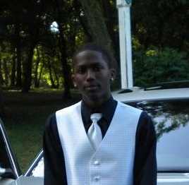

<!DOCTYPE html>
<html lang="en">
<head>
	<title>
		Tavarius Slaughter
	</title>
	<meta charset="utf-8" />
</head>
<body>
</body>
</html>
<div>
	
</div>
<br/>
<div>
	<p>
		Tavarius Slaughter<br/>
		Educational Institution : Florida State University <br/>
		Major : Electrical Engineering<br/>
		Project Responsibility : Primiary - Test Engineer<br/>
				&nbsp;&nbsp;&nbsp;&nbsp;&nbsp;&nbsp;&nbsp;&nbsp;&nbsp;&nbsp;&nbsp;&nbsp;
				&nbsp;&nbsp;&nbsp;&nbsp;&nbsp;&nbsp;&nbsp;&nbsp;&nbsp;&nbsp;&nbsp;&nbsp;
				&nbsp;&nbsp;&nbsp;&nbsp;&nbsp;&nbsp;&nbsp;&nbsp;&nbsp;
					 Secondary - Project Manager
	</p>
</div>
<br/>
<div>
	<center>
		Background Information
		<p style="text-align: justify; width: 600px; margin: auto;">
			I was born March 23, 1992, in Orlando FL. As of now, Tallahassee is
			home until I graduate from The Florida State University. I consider
			myself a hardworking individual as I like to stay busy in order to
			keep myself focused on bettering my future. In my free time I like
			to partake in playing sports or relax by playing video games. After
			completing my undergraduate degree, I want to pursue my Masters in
			Engineering. In 10 years I see myself being a prosperous Electrical
			Engineer and providing for my family.
		</p>
	</center>
</div>
</html>